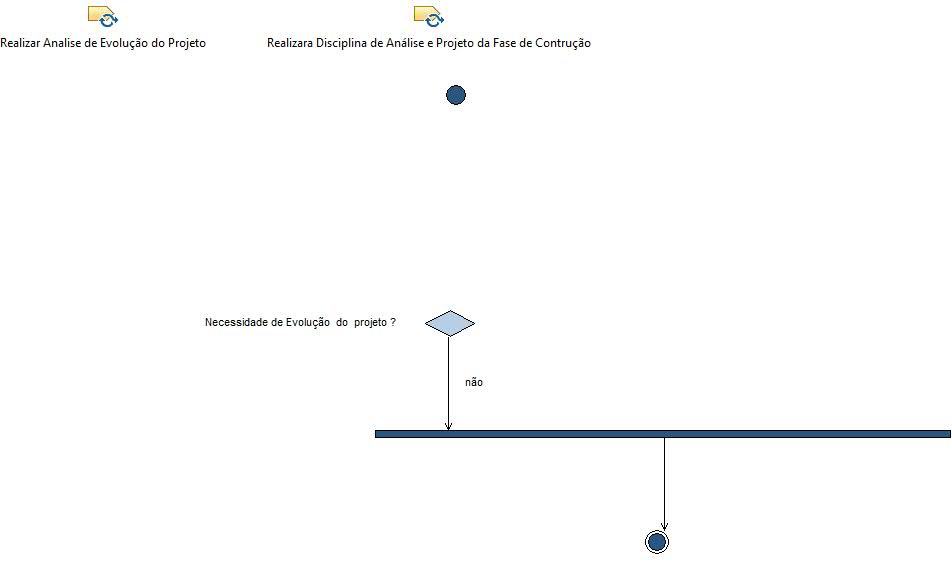

Activity: Requisitos Validação
A disciplina de requisitos na fase de validação é bastante simples. Ela será executada apenas se novas funcionalidades tiverem sido adicionadas ao sistema.
Description
Work Breakdown Structure
Team Allocation
Work Product Usage
Workflow

Work Breakdown